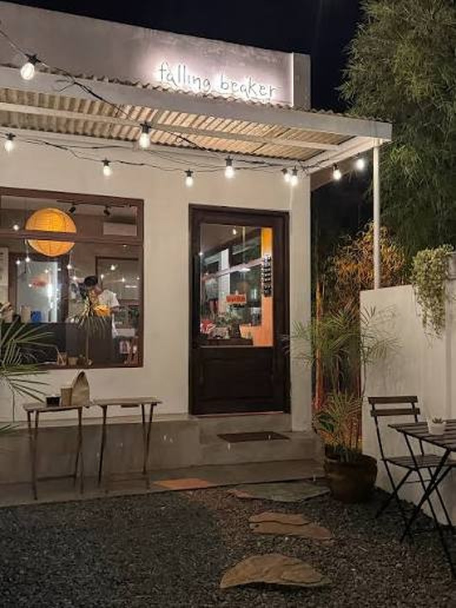
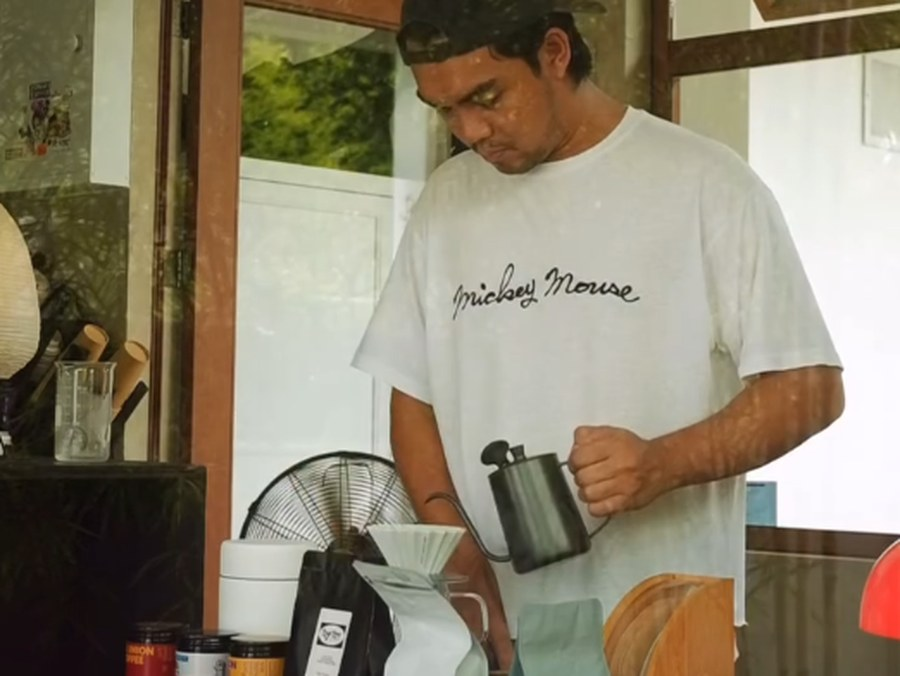
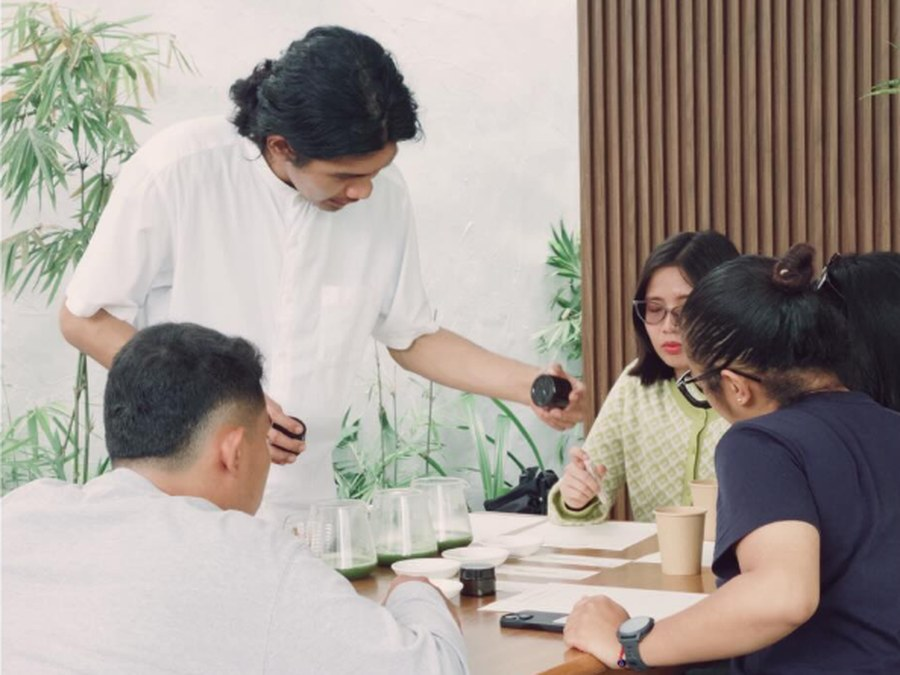

Start a conversation
Tell me a little about what you're working on and I'll get back to you by email.
Prefer regular email? kendulfo@gmail.com
Hi, I'm Kenneth
I'm a Manila-based product designer and UX architect. I take products from research and information architecture through to shipped interfaces, and build the design systems that hold them together across insurance, banking and logistics.
I'm Kenneth, and somebody has to care about the plumbing. I started as a graphic designer, got handed one web project, and never really went back. Eleven years on, most of my work is the part nobody screenshots: how things are organised, what happens when you tap, and the design systems that stop twenty designers building the same button twenty different ways.
See my experienceThe part I love is seeing it at work, when people get through a flow without thinking and the usability results come back better. I work in the open and keep the whole team aligned, so nobody is guessing what changed or why.
Selected work
 AIA
One Design System for Eighteen Asian Markets.
Qi, built for AIA and adopted by the Vitality app and the public site. In a timed test, twenty designers built the same page about 60% faster with it.
AIA
One Design System for Eighteen Asian Markets.
Qi, built for AIA and adopted by the Vitality app and the public site. In a timed test, twenty designers built the same page about 60% faster with it.
 Manulife
Asking Someone to Recommend You, Without Making It Weird.
A referral programme for Manulife's customer website: three moments it can be offered, one set of rules underneath, and a friend who has to feel invited rather than sold to.
Manulife
Asking Someone to Recommend You, Without Making It Weird.
A referral programme for Manulife's customer website: three moments it can be offered, one set of rules underneath, and a friend who has to feel invited rather than sold to.
 EastWest
Linking an Insurance Policy Inside a Banking App.
EastWest Ageas policies inside the EastWest Bank app: identity, consent, every way the link can fail, and a lead path for customers who hold no policy yet.
EastWest
Linking an Insurance Policy Inside a Banking App.
EastWest Ageas policies inside the EastWest Bank app: identity, consent, every way the link can fail, and a lead path for customers who hold no policy yet.
 Segstream
A Design System That Rethemes in Five Edits.
Segstream rebuilt on three tiers of tokens: forty component sets, 485 variants, real dark mode, and a full retheme that takes five edits.
Segstream
A Design System That Rethemes in Five Edits.
Segstream rebuilt on three tiers of tokens: forty component sets, 485 variants, real dark mode, and a full retheme that takes five edits.
 Entrego
Designing a Delivery App from Research to Launch.
A customer-facing parcel app taken from user research and journey mapping through to 113 shipped screens, live on the App Store and Google Play at 4.8 stars.
Entrego
Designing a Delivery App from Research to Launch.
A customer-facing parcel app taken from user research and journey mapping through to 113 shipped screens, live on the App Store and Google Play at 4.8 stars.
 KwikCare
Selling Health Cover Inside a Wallet App.
KwikCare in GCash: five plan tiers, a guided four-step purchase with health declaration and document upload, and a policy dashboard for every plan.
KwikCare
Selling Health Cover Inside a Wallet App.
KwikCare in GCash: five plan tiers, a guided four-step purchase with health declaration and document upload, and a policy dashboard for every plan.
 KwikCare Web
Rebuilding a Product Listing Page.
A plan listing rebuilt into a comparison: price leading every card, the popular plan marked, filters applying live, and the empty and loading states designed.
KwikCare Web
Rebuilding a Product Listing Page.
A plan listing rebuilt into a comparison: price leading every card, the popular plan marked, filters applying live, and the empty and loading states designed.
 Brew
A Coffee Scale That Tells You Everything Except What To Do.
A side project. I connected to my scale over Bluetooth and built the missing half: the number counts down to zero, and a pour ends when you actually get there.
Brew
A Coffee Scale That Tells You Everything Except What To Do.
A side project. I connected to my scale over Bluetooth and built the missing half: the number counts down to zero, and a pour ends when you actually get there.
Measured, not guessed
Figures from the AIA, EastWest and Entrego work.
Twenty designers built the same page about 60% faster with Qi than without it.
Experience
Manulife IT Delivery Center Asia
Lead designer across concurrent product streams, and a core contributor to the global design system serving 200+ designers.
EastWest Ageas Insurance · BGC, Taguig
Cut field-agent task time from 30 minutes to 5 with a guided flow, and led a team of five designers.
AIA Digital+ · Makati
Built Qi, a design system for 18 Asian markets with 300+ components, and measured its effect with twenty designers.
Entrego · Muntinlupa
Built the company's first design system and the design review process still used before development. Led three designers.
Contentserv AG · Makati
Concepts, mockups and prototypes for enterprise SaaS.
Triple One Technologies · Tri7 Solutions
Web and mobile interfaces, prototypes, infographics and marketing collateral.
Mobilepaid
Company branding and the internal design process.
BA Multimedia Arts, De La Salle–College of Saint Benilde, 2010–2014. Dean's Lister.
NN/g UX Certification · LUMA Human-Centered Design · Professional Scrum Master I · Google Foundations of UX Design
Figma, FigJam, Sketch, Adobe Suite, Miro, Jira
Tell me a little about what you're working on and I'll get back to you by email.
Prefer regular email? kendulfo@gmail.com
Rebuilding a design system so that everything themeable lives in variables — one token edit moves the entire product, with no manual cleanup.
Segstream's design system, rebuilt so that every colour, size, radius and typeface lives in a variable. Version 2.0 ships 40 component sets at 485 variants, 416 variables across seven collections, 23 text styles and a local 54-glyph icon set, with two colour modes and three density modes throughout. The organising promise is simple: one token edit moves the entire product — every component, every screen, both modes — with no manual cleanup afterwards.
The original file had 19 component sets and 245 variables, and it had drifted. Colour was bound directly to primitives in places, so a brand change meant hunting through components rather than editing a ramp. Dark mode existed in name only. There was no icon set, and the documentation was built from raw hex values that quietly disagreed with the components they described. Rethemeing was manual work with no way to know when it was finished.
A three-tier token architecture, held together by one rule: a component never binds to a primitive. Raw hex lives in a hidden primitives collection. A semantic layer — background, foreground, border, brand, status, shadow — carries both modes and aliases those primitives. Component tokens alias the semantic and layout tiers in turn. On top of that structure, an entire retheme collapses to five edits: the brand ramp, an optional neutral ramp, two font families, three radius values, and a single logo component.
Templates are assembled only from instances, so every screen below inherits the same tokens — change the ramp and all of them move together.
The screenshots above are stills. The file itself is browsable — every page, component set, variant and token, in both colour modes.
Builds ship on reusable components instead of rebuilding patterns per feature
Every screen aligned to the system, nothing drawn off-token
Across 40 component sets — patterns get assembled, not redrawn
New screens begin from a template rather than a blank canvas
Compact, default and spacious from one component set, with no redesign
Light and dark ship from the same components, with no parallel file to maintain
EastWest Bank customers hold EastWest Ageas policies they can only see by logging into a separate site. This flow brings those policies into the banking app — proving identity, capturing consent, and handling every way the link can fail.
Plenty of EastWest Bank customers also hold an EastWest Ageas life insurance policy — but the two lived apart. Checking a policy meant leaving the banking app, remembering a second set of credentials, and signing into an insurance site built for a different purpose. Most people simply never looked. This project brings those policies into the app customers already open daily, and designs the whole connection: who you say you are, what you agree to, and what happens when any part of it goes wrong.
Linking a bank account to an insurer is only partly a technical problem. It is mostly a trust problem. The flow has to prove identity convincingly enough to justify showing financial products, ask for consent in language a person can actually read, and never strand someone when a policy number is mistyped, a one-time code expires, or the insurer's system stops answering. The happy path is the short part of this work — the failures are where the experience is won or lost, and they are usually the part nobody draws.
One clear journey — prompt, consent, policy number, one-time code, handoff — with every branch off it designed rather than left for the back end to explain. Friction is sized to consequence: linking moves quickly, unlinking stops to confirm. Failures are separated by cause, so a wrong code and an expired code say different things and offer different ways forward. Contact details are validated at the point of entry instead of failing silently later. And a customer who holds no policy meets a short introduction rather than a locked door.
The cross-sell is where linking stops being plumbing and starts earning its place: a customer with no Ageas policy meets an offer on the dashboard, agrees to share their details, and becomes a warm lead for an advisor — without filling in an insurance application inside a banking app.
Every flow, state and annotation on one board — including the edge cases that rarely make it into a portfolio.
What this changes for the person holding the policy.
Your policy sits beside your accounts, in the app you already open
No separate insurance site, and no second set of credentials to remember
Customers without a policy see what they could add, right where they bank
Link, check or unlink cover without calling anyone or waiting on office hours
Every refusal names its reason and offers a way forward, so no one is stranded
Nothing is connected until you agree, in words you can actually read
myEntrego is a customer-facing parcel app — book a delivery, pay for it, and see where it is. I owned it end to end, from user research through to the 113 screens that shipped on the App Store and Google Play.
Entrego is a Philippine logistics company, and myEntrego is how its customers actually reach it — booking a delivery, paying for it, and tracking where the parcel has got to. This was mine from the first interview to the last screen: research and personas, a journey map, the information architecture, the booking flow, and 113 designed screens. It shipped to both app stores and settled at around 4.8 stars, with parcel tracking pulling the most repeat traffic.
Sending a parcel through a logistics provider meant phone calls, guesswork about cost, and no way to know where anything was once it left your hands. The research made the friction specific rather than general: booking took too many steps, addresses were hard to pin down, and the bill could not be read in full. The app also had to make sense to two very different people — a seller running a small business from her phone, and a courier who had spent ten years on a motorcycle and described himself as afraid of technology.
Every significant decision traces back to something a real user said. Booking became a guided flow with saved addresses, so the second delivery is far quicker than the first. A shipping fee calculator puts the cost up front, before anyone commits. And tracking was made available without logging in at all — the thing people do most often became the thing that asks least of them, which is what turned it into the app's most returned-to screen.
The research artefacts and the screens they produced, in the order they happened.
Research, flows and all 113 screens on one canvas.
What shipped, and what it changed for the person sending a parcel.
Held across the App Store and Google Play after launch
Shipped on iOS and Android, not a prototype or a concept
Check a parcel without an account — the most returned-to screen
A fee calculator, so price is known before anyone commits
Onboarding through to payment confirmation, states included
The merchant sending parcels and the courier delivering them
KwikCare plans bought without ever leaving GCash — five tiers priced from ₱995 a month, a guided four-step purchase with health declaration and document upload, and a policy dashboard for every plan.
KwikCare is health cover sold as a monthly subscription, underwritten by PhilCare and bought inside GCash — the wallet a large share of the Philippines already has open. The work covers the whole commercial path: comparing five plan tiers, understanding what each actually covers, completing a health declaration and document upload, paying from a wallet balance, and then living with the policy afterwards.
Insurance is difficult to sell on a phone for two reasons. The product is hard to compare — benefit limits, exclusions and waiting periods do not fit on a card — and the purchase asks for exactly the things people abandon forms over: identity documents, proof of income, and a declaration about their own health. Doing this inside someone else's app raises the bar again: the flow has to feel like a native part of GCash, or the trust that made the wallet worth using does not carry across to the insurance sitting inside it.
Tiers are presented as a comparison rather than a brochure: each plan leads with its price and its maximum benefit limit, then lists what it actually includes. Every tier carries its own covered-and-excluded breakdown instead of one generic table, because the differences between plans are the entire decision. The purchase is cut into four named steps so the length is visible from the start, and the health declaration is kept short and in-flow rather than deferred to a form nobody finishes.
From the wireframes that set the structure through to the specs that shipped it.
Wireframes, four design versions, the prototype and the specs, all on one canvas.
What it changes for someone deciding whether they can afford health cover.
Cover that scales to a budget, starting at ₱995 a month
Compare, buy, pay and manage without leaving GCash
Named and numbered, so the length is known before starting
Maximum benefit limit at the highest tier, stated plainly on the card
Declaration and documents handled inside the flow, not in a queue
Covered and excluded written per plan, not buried in one generic table
The KwikCare plan listing, rebuilt so the plans can actually be compared — price leading every card, one plan recommended, and the two states nobody designs specified at both breakpoints.
KwikCare sells subscription health plans online. The plan listing is the page where the decision actually happens — it is where someone works out which plan they can afford and what it covers, and it is the last page before the product detail and the enrolment flow. This is a redesign of that page at both breakpoints, including the states it enters when there is nothing to show and nothing yet loaded.
The live page listed plans without letting anyone compare them. Every card carried the same block of coverage copy — identical eligibility wording repeated five times — so the differences between plans, which are the entire decision, were buried in text that read the same on every row. Price sat small and right-aligned, competing with a button rather than leading the card. The filters were a column of radio buttons and checkboxes behind an Apply button, so narrowing the list cost a round trip. Nothing marked which plan most people take.
Price leads now, at the size of a headline, because affordability is the first question and there is no reason to make anyone hunt for it. Each card carries three benefits written for that plan rather than one block of shared boilerplate, so scanning down the row surfaces difference instead of sameness. The popular plan is labelled. Filters apply live against a running count, and the budget range — six radio buttons on the old page — became a single slider. The empty and loading states are designed rather than inherited.
The same page, same plans, same catalogue. What changed is what the page makes easy.
Three states at each breakpoint, because a listing page is only in its default state some of the time.
What the page does differently, stated as what changed rather than what was made.
Price leads every card instead of sitting small beside a button
Desktop filters narrow the list live, against a count that moves with them
Six price brackets collapsed into a single slider
Default, empty and loading — specified, not left to the build
Three lines written for each plan, replacing one repeated paragraph
Desktop and mobile, each with its own correct filter pattern
The Timemore Dot is a lovely little scale. Its app shows you numbers, but never tells you what to do with them. So I built the app it was missing.
The Timemore Dot is a coffee scale about the size of a coaster. It has no screen of its own — it sends the weight and the time to your phone instead. The hardware is genuinely nice. The app that comes with it is where it falls down: it shows you plenty of numbers, but it never helps you use them. This is the app I built to replace it.
Making pour-over coffee is a timed routine. You pour water up to 90 grams by 40 seconds, stop, wait, then pour up to 135 grams by 1:20. The app knows the weight. It knows the time. It never puts the two together.
So you end up keeping track yourself, while both hands are busy holding a kettle. Is it time yet? Am I there yet? Do I stop now?
It trips up two kinds of people for the same reason. If you are new, you do not know the routine, and the app cannot help because it has no idea what you are making. If you have done this for years, you know the routine but you are still doing sums mid-pour — the recipe says stop at 90, the screen says 62, so you are subtracting in your head, over and over, with wet hands.
The app tells you what is happening. What you actually need is what to do next.
This is what comes in the box, and it is worth looking at closely, because most of what is wrong with it is wrong in a quiet way.
Four things are missing, and together they are the whole reason I built something else.
The biggest number on my screen changes depending on what you are doing.
While you are pouring, it shows how many grams you have left, counting down to zero. While you are waiting, it shows how many seconds until the next pour. The weight is still there, just smaller, for when you want to check it.
That is really the whole idea: the app does the sums so you do not have to.
Everything else follows from it. A pour finishes when the scale says you got there, not when a timer guesses. The card changes colour so you can read it from across the kitchen. Four different sounds cover the moments your eyes are on the coffee and not the phone. And the timer starts itself the moment water hits the scale, so there is nothing to press.
Here it is running. Watch the big number: while you pour it counts grams down to zero, and the moment you are done it flips to counting the seconds until the next one.
A recording of the live app, running at double speed. No scale connected here, so it works off the clock — watch the big number switch between grams left while you pour and seconds left while you wait.
I would rather be straight about this than pretend I hand-wrote three thousand lines of Bluetooth code. I decided what it should do and how it should behave. The model wrote most of the code, and when I asked it to go looking for problems, it found a few I would otherwise have shipped.
Spotting that the app should be telling you what to do rather than what is happening. The number that swaps jobs. Letting people type amounts instead of totals. The sounds, what to throw away, and giving up on the floating window in favour of talking to the scale directly.
The Bluetooth code, reading the data off the scale, and a speed pass that cut the work the app does on every update by about 99%.
The "start pouring" sound never played. The code meant to trigger it sat inside a section that stopped running the moment a pour began. Nothing looked wrong on screen — it only showed up when I ran a fake brew end to end.
The part that still takes judgement is the same as it has always been: working out which problem is worth solving, what to leave out, and when something is quietly not doing what it claims. It got faster. It did not get easier.
It is live, it replaced the Timemore app on my phone, and I use it every morning.
The app works out what is left to pour, so you do not have to
One recipe, the same cup, whoever happens to be pouring it
It replaced the one that came in the box, and stayed replaced
What I still cannot claim is proof that it makes better coffee. Two other people using it once is encouraging, not evidence. So I built in the measurement that would settle it: every brew records how far each pour landed from its target, which is the number that should get smaller if the design is doing its job.
The next step is twenty brews, ten on each app, comparing how far off the pours are. If it does not improve, then the prompts are decoration and I will say so right here.

Everything above was me, in my own kitchen, with my own recipe. So I took it to a friend who runs a cafe and handed it to two people who had never seen it before.
Falling Beaker — a small place, and two people who make coffee for other people all day. A harder test than my own kitchen at seven in the morning.

Runs the cafe · years behind the bar
Got going without being walked through it. He already knew the routine, so what the app gave him was not instruction so much as one less thing to hold in his head while pouring.

New to pour-over
The owner asked one of his newer baristas to try it. This is the person the design was really for — someone who does not yet know the sequence and would otherwise be working off a recipe card or a video.
It is good for training the new baristas. I can share my recipes with them and the brew still comes out the same.
What he took from it was something I had not framed for myself. I had been thinking about it as a tool for one person making one careful cup. He saw it as a way to get the same cup out of different people — the trainees learning the routine by following it, and the experienced staff hitting the same targets they would otherwise be eyeballing. Consistency across a team, rather than help for a beginner.
That is a different product from the one I set out to build, and a bigger one. It also changes what is worth measuring: not just whether my pours get closer to target, but whether two different people pouring the same recipe end up closer to each other.
Five things came out of that visit. The first one overturns the decision this whole case study is built on, which is the best argument I have for showing a thing to people instead of admiring it on your own bench.
The last one matters most for the test I still owe. Overshoot on its own is a thin number; overshoot next to the grind and the dripper is the start of knowing what actually moves it.
Chrome on Android or desktop can talk to the Dot directly. On an iPhone you need Bluefy first, because Safari cannot reach Bluetooth devices. Either way the timer version runs in any browser.
A referral programme on Manulife's Customer Website. Three different moments where it can be offered, one flow underneath, and a friend on the other end who has to feel invited rather than sold to.
Manulife's Customer Website is where policy owners in Singapore manage what they already have. The referral module adds something different: a way for a happy customer to introduce a friend, with a reward on both sides once that friend actually becomes a customer. I designed the module end to end — where it gets offered, what the referrer sees, what the friend lands on, and the rules that hold the whole thing together.
A referral is a favour you ask of someone. Ask at the wrong moment and it reads as a sales pitch dressed up as a thank-you; ask badly and the person on the receiving end feels sold to by their own friend. Both are easy to do and hard to undo.
There were three places the business wanted to offer it, and they are not the same situation at all:
Underneath all three sits the harder half. A referral only works if the friend shows up, and in insurance that means handing a stranger's phone number to someone who sells for a living. Get the consent wrong and it is not just rude, it is a regulatory problem.
One flow, three doors into it. The entry points differ in tone and timing; the machinery behind them — eligibility, consent, link generation, consultant assignment, reward — is the same in every case.
The referral is to a person, not a company. The referrer picks which financial consultant they are vouching for, and that choice carries all the way through to what their friend sees. And the friend's page leads with who sent them and what will actually happen next, before it asks for anything.
I mapped each entry point as a service blueprint before designing a screen — referrer on one lane, the friend on another, and the system work underneath. It is the only way to see that three different front doors can share one set of rules, and the only way to spot where a reward is promised before anyone has checked it can be paid.
The blueprints did something else useful: they gave the business a thing to argue with. Stakeholders who will not read a spec will happily tell you a lane is wrong.
A blueprint tells you what happens. It does not tell you what it feels like to be asked for a favour by your insurer, which is the part of this that could go wrong without a single lane being incorrect. So the same flow got told a second way — a cast of three, and the journey as scenes, each one tagged with whose turn it is. Each story runs left to right; drag it, or use the arrows.
Randy finishes a transaction on the Customer Website and it goes well. Nothing about referral has happened yet — this is the thing a referral is made of, and the programme has no business existing before it.
The tNPS survey arrives when he logs out and he rates the experience a ten. That score is the trigger: the only people asked are the ones who have just said, unprompted, that they were happy.
An email asks whether he would introduce family or friends to the consultant he dealt with. It arrives two weeks after the survey rather than in the same breath as it.
Randy thinks of Sarah, a friend who would get something out of talking to his consultant. He chooses Refer now and signs in to the Customer Website.
He accepts the terms, generates a referral code tied to the consultant he picked, and sends it to Sarah on WhatsApp — the sharing happens where the friendship already is, not inside our product.
The message arrives from someone she knows rather than from an insurer she has never dealt with. She opens the link, reads what it is, and fills in the form.
Her submission is validated and routed to the consultant Randy chose, who receives her details and arranges a conversation. The name Randy vouched for is the name Sarah was told about.
Priya meets Sarah, works through what she needs and what she is saving towards, and recommends from there — then stays with her through the next steps.
Once the qualifying criteria are met during the FNA, the reward is issued to Randy and to Sarah. The friend is not the mechanism by which the referrer gets something.
The second and third stories are short for a reason. They differ only at the front door — a notification on a phone, or a consultant raising it across a desk. From the referral page onwards each one becomes the first story, which is the whole argument for building the rules once instead of three times.
Randy sees the programme announced on his phone and opens MyManulife to find out what it is. The referral card sits on the home screen among his policies, so the offer arrives while he is already looking at what he holds with us.
Randy is sitting with his consultant about a policy, and she introduces the programme as part of that conversation rather than as a separate pitch at the end of it.
The consultant goes through the terms, the conditions and PDPA with him in person. Consent carries the same weight whether it is a checkbox or someone explaining it across a desk.
The referrer's side, the moment it changes state, and what the friend actually lands on.
Shipped on the Customer Website, with the same rules behind every entry point.
tNPS, the website and an FNA conversation share a single set of rules
The referrer and the friend, rather than treating the friend as an outcome
The person the referrer vouches for is the person the friend is told about
Building a comprehensive design system from scratch for a fast-growing insurance business
When I joined AIA, they had grown from 5 to 50 designers in 18 months. Their product had evolved organically, resulting in inconsistent UI patterns, duplicated components, and a development process that was slowing down with each new feature. I was tasked with creating a comprehensive design system that would scale with the company's rapid growth.
The main challenge was creating a system that could adapt to different regions while being flexible enough to accommodate rapid feature development. We needed to establish design principles, create a token system, build the component library, and migrate existing products without disrupting ongoing development.
I led the creation of a comprehensive design system built on atomic design principles. We established a robust token system, created extensive component documentation, and implemented a phased migration strategy that allowed teams to adopt the system gradually.
Every component ships as documentation rather than just a symbol — what it is for, how it behaves, and which platforms have it ready. Each page carries its own version and a resource row covering the Figma kit, React, Vue, AEM and React Native, so a designer and an engineer can check the same page and get the same answer.
The crops above are stills. The system itself is 59 pages — principles, foundations, and a documented page for every component, each carrying its build status across Figma, React, Vue, AEM and React Native.
Timed test, 20 designers: the same page built with the system against building it their own way
One system serving 18 Asian markets, multi-script typography included
Figma, React, Vue, AEM and React Native, status stated per component